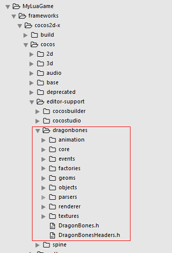
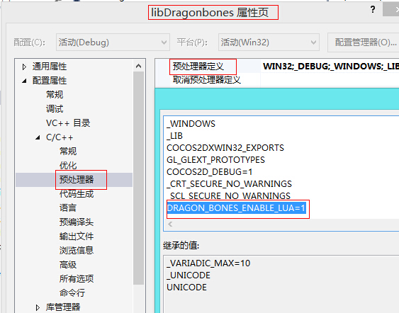

如何做dragonbones的lua绑定(VisualStudio)
最近好多同学在QQ群里问怎么在lua项目中使用DB(DrgonBones，龙骨)，为了帮助更多的人，同时也好让更多的人跟容易使用DB，这里详细记录coco2dx-3.2版本对应DB的lua绑定。
首先要说明下，本文章对应的cocos2dx-3.2版本，其他cocos2dx-3.x版本跟3.2版本类似。
这里假设自己使用cocos命令行创建的lua项目，而且没有修改过目录结构，如果修改了请自行查找具体文件所在目录。
第一个假设，假设你已经知道如何配置cocos2dx-3.x的lua绑定，如果不知道的请移步bindings-generator查看README文件。
第二个假设，假设你已经使用cocos2dx-3.2创建了lua项目，名字为MyLuaGame，并且没有修改过里面的路径。
从GitHub上下载DragonBonesCPP项目，将dragonbones文件夹移动到MyLuaGame/frameworks/cocos2d-x/cocos/editor-support下。目录结构类似于这样：

添加db库
在vs(Visual Studio)中打开MyLuaGame项目。
右击解决方案 => 添加 => 现有项目... ，选择MyLuaGame/frameworks/cocos2d-x/cocos/editor-support/dragonbones/renderer/cocos2d-x-3.x/proj.win32/libDragonbones.vcxproj。
添加预处理宏
对libDragonbones和liblua库添加预处理宏DRAGON_BONES_ENABLE_LUA=1。
右击 libDragonbones => 属性 => 配置属性 => C/C++ => 预处理器 => 预处理定义 ，点击值后右边会有个下拉框，选择编辑，添加DRAGON_BONES_ENABLE_LUA=1并确认。
这里是libDragonbones的预处理宏，liblua的也类似。

还有一种简便的方式，不需要去项目配置预定义宏，修改MyLuaGame/frameworks/cocos2d-x/cocos/editor-support/dragonbones/renderer/cocos2d-x-3.x/dbccMacro.h文件，
将#define DRAGON_BONES_ENABLE_LUA 0中的0修改为1。
不过不建议直接修改db的源文件，因为将来升级db的时候还需要再次修改这里。
向liblua库中添加两条搜索路径
右击 liblua => 属性 => 配置属性 => 常规 => 附加包含目录，点击值后右边会有个下拉框，选择编辑，添加下面的搜索路径并确认。
$(EngineRoot)cocoseditor-supportdragonbones $(EngineRoot)cocoseditor-supportdragonbonesrenderercocos2d-x-3.x
为MyLuaGame添加依赖项
右键MyLuaGame => 生成依赖项 => 项目依赖项...，勾选libDragonbones。
右键MyLuaGame => 属性 => 通用属性 => 添加新引用 => 勾选 libDragonbones。
修改conversions.yaml
文件路径：MyLuaGame/frameworks/cocos2d-x/tools/bindings-generator/targets/lua/conversions.yaml
ns_map: 下添加 "dragonBones::": "db."
to_native: 下添加：
LUA_FUNCTION : "${out_value} = toluafix_ref_function(tolua_S,${arg_idx},0);ok &= ${out_value} != 0;"
完整文件下载(cocos2dx3.2, cocos2dx3.3, cocos2dx3.4)，其他版本的请自行修改。
添加dragonbones.ini
文件路径：MyLuaGame/frameworks/cocos2d-x/tools/tolua/dragonbones.ini
复制cocos2dx.ini并命名为dragonbones.ini。
参照cocos2dx-3.2的dragonbones.ini修改。
- 修改第一行
[cocos2d-x]=>[dragonbones] - 修改
prefix = cocos2dx=>prefix = dragonbones - 修改
target_namespace = cc=>target_namespace = db - 将下列路径追加到cocos_headers，空格分隔，不能换行。
-I%(cocosdir)s/cocos/editor-support/dragonbones -I%(cocosdir)s/cocos/editor-support/dragonbones/renderer/cocos2d-x-3.x -I%(cocosdir)s/external/lua/luajit/include -I%(cocosdir)s/cocos/scripting/lua-bindings/manual -I%(cocosdir)s/external/lua/tolua
- 将下列头文件设置到headers，直接覆盖原有的就好，依然空格分隔，不能换行。
%(cocosdir)s/cocos/editor-support/dragonbones/renderer/cocos2d-x-3.x/DBCCRenderHeaders.h %(cocosdir)s/cocos/editor-support/dragonbones/DragonBonesHeaders.h
- 将下列类添加到classess，自己覆盖原有的就好，依然空格分隔，不能换行。可以添加更多你自己需要的类。
DBCCArmature DBCCArmatureNode Armature Animation AnimationState DBCCFactory BaseFactory Slot DBCCSlot WorldClock IAnimatable
- 设置skip为下面的，注意格式，可以自行修改。
skip = Bone::[getSlots getChildArmature], Armature::[getSlots getBones getBoundingBox], Animation::[getAnimationDataList setAnimationDataList getAnimationData addLayer setActive], Slot::[setDisplayList getDisplayList getBoundingBox], BaseFactory::[getTextureAtlasMap getDragonBonesDataMap], WorldClock::[add remove contains]
- 设置 abstract_classes 为下面的，直接覆盖就好。
abstract_classes = BaseFactory Slot Armature IAnimatable BaseFactory Slot Armature IAnimatable
完整文件下载(cocos2dx3.2, cocos2dx3.3, cocos2dx3.4)，其他版本的请自行修改。
修改genbindings.py
文件路径：MyLuaGame/frameworks/cocos2d-x/tools/tolua/genbindings.py
搜索'cocos2dx.ini' : ('cocos2d-x', 'lua_cocos2dx_auto'),
在这一段中添加'dragonbones.ini' : ('dragonbones', 'lua_dragonbones_auto'),.
完整代码段为：
cmd_args = {'cocos2dx.ini' : ('cocos2d-x', 'lua_cocos2dx_auto'), 'cocos2dx_extension.ini' : ('cocos2dx_extension', 'lua_cocos2dx_extension_auto'), 'cocos2dx_ui.ini' : ('cocos2dx_ui', 'lua_cocos2dx_ui_auto'), 'cocos2dx_studio.ini' : ('cocos2dx_studio', 'lua_cocos2dx_studio_auto'), 'cocos2dx_spine.ini' : ('cocos2dx_spine', 'lua_cocos2dx_spine_auto'), 'cocos2dx_physics.ini' : ('cocos2dx_physics', 'lua_cocos2dx_physics_auto'), 'cocos2dx_experimental_video.ini' : ('cocos2dx_experimental_video', 'lua_cocos2dx_experimental_video_auto'), 'cocos2dx_experimental.ini' : ('cocos2dx_experimental', 'lua_cocos2dx_experimental_auto'), 'cocos2dx_controller.ini' : ('cocos2dx_controller', 'lua_cocos2dx_controller_auto'), 'dragonbones.ini' : ('dragonbones', 'lua_dragonbones_auto'), } target = 'lua'
完整文件下载(cocos2dx3.2, cocos2dx3.3, cocos2dx3.4)，其他版本的请自行修改。
生成lua绑定
由于cocos2dx-3.2版本的lua绑定缺少dos2unix.exe文件，所以需要从这里下载，并放到
MyLuaGame/frameworks/cocos2d-x/tools/bindings-generator/tools/win32 目录下。
在命令行中运行MyLuaGame/frameworks/cocos2d-x/tools/tolua/genbindings.py，不出意外就一次生成成功了。
如果你没有配置好或者没有成功生成绑定文件，可以自己下载完整的绑定文件，其他版本的请自行修改。
lua_dragonbones_auto.hpp(cocos2dx3.2, cocos2dx3.3, cocos2dx3.4)
lua_dragonbones_auto.cpp(cocos2dx3.2, cocos2dx3.3, cocos2dx3.4)
注册libDragonbones到liblua
右键libLua/auto => 添加 => 现有项.. ，选择 MyLuaGame/frameworks/cocos2d-x/cocos/scripting/lua-bindings/auto/ 目录下的lua_dragonbones_auto.cpp和lua_dragonbones_auto.hpp文件。
向CCLuaStack.cpp中添加#include "lua_dragonbones_auto.hpp"头。
向bool LuaStack::init(void)函数中添加register_all_dragonbones(_state);。
完整文件下载(cocos2dx3.2, cocos2dx3.3, cocos2dx3.4)，其他版本的请自行修改。
最后
到这里就全部结束了，项目应该能编译通过并运行，之后就用lua写代码吧。
如果MyLuaGame的C++部分也使用了dragonbones，那么也需要在为MyLuaGame项目添加搜索路径及预定义宏。
接下来可以看看：
如何做dragonbones的lua绑定(Android)
如何在lua项目中使用dragonbones
更新记录：
[2015/02/07] 增加了CCLuaStack.cpp及cocos2dx-3.3/3.4的链接
[2015/02/05] 增加了添加搜索路径的方法
[2015/01/15] 修改dragonbones/renderer下为cocos2d-x-3.x
[2014/12/05] 增加了cocos2dx-3.2绑定好的hpp cpp文件
[2014/11/24] 增加了cocos2dx-3.x的lua绑定链接
[2014/11/24] 增加了dragonbones.ini的添加方法
@熊
xcode下没有的，直接将dragonbones下的文件都放到libcocos2d中，然后将lua绑定的文件放到liblua工程中，并设置好搜索路径就好了。
求mac下如何配置！！！！！
@Tshine
昨天上传了db的性能测试例子，在我的MX1上可以放50只帧频是50左右，看来性能不是很好。
@lite3
嗯，是的。
cocos2dx3.3final cpp做的测试
@Tshine
是cocos2dx3.x的吗，其实还没做过性能测试。
锤子手机30只龙跑步动作，30~40帧徘徊。感觉上效率好像有点低……顶点数3000来个，drawcall 4
博主项目里一般跑几个实例不影响帧率？
@lite3
我试过用三星的3502u放三十只龙进去。帧率会掉到20多帧。
@ray
@熊
dragonbones有官方QQ群：205889387
性能测试还没有做过，不过我们游戏中也有好多dragonbones的实例，没有出现很卡的情况，建议做一个简单的demo跑下，看看是不是真的是dragonbones本身的问题。
@熊
我也想求博主建群~